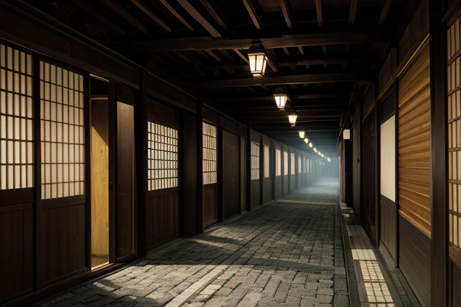
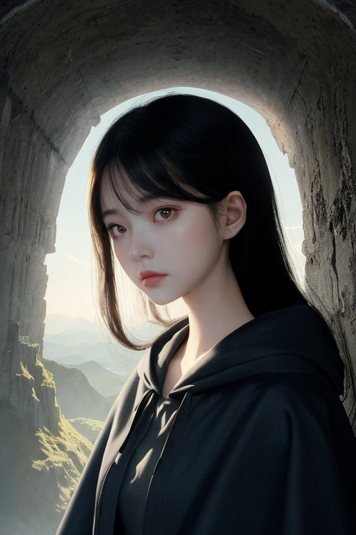
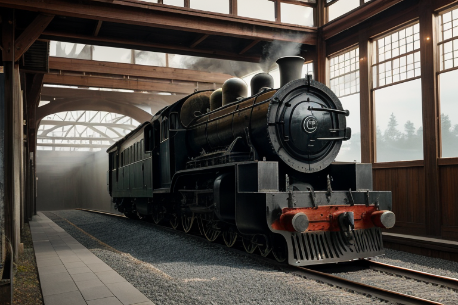
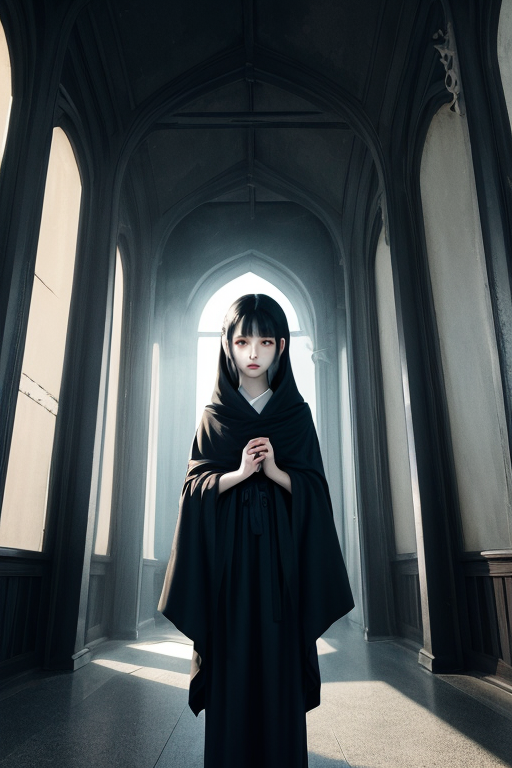
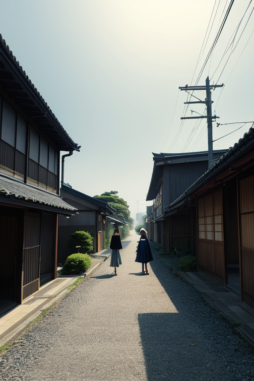

第一章 現実の埼玉
あなたはまだ気づいていない。この土地にも、王がいることを。
秩父連山の稜線が西の空に沈み、平野が闇に飲み込まれる時、サイタマル・アンブラは目を覚ます。王の星から遣わされた四十七人の王の一人。彼の王国「サイタマル・アンブラ」は、海もなく、際立った山もなく、時に「どこでもない」と揶揄されるこの地に張り付く。境界線の王国だ。東は東京という巨大な磁場に引き寄せられ、西は山々に阻まれる。ここは、内と外の狭間。通過地点としてしか認識されない日常の連続が、この土地の質感だ。
王は影のように、川越の蔵造りの街並みを歩く。観光客の笑い声が去った後、彼は古い木組みの歪みに手を触れる。微かに軋む音。それは地盤のわずかな緊張。彼の細やかな光線が、目に見えない網のように地中に広がり、その緊張をほんの少し分散させる。消せはしない。ただ、受け止め、緩衝する。それが彼の役目。十万石饅頭の甘い匂いが漂う路地裏で、彼は立ち止まる。平凡の裏側。そこには、巨大都市の圧力と自然の隆起の、絶え間ない均衡作業があった。

第二章「歪みの兆候」
鉄道博物館の巨大な車輪の前で、彼は目を細めた。鉄と歴史の重みが、この地の下層に沈殿している。首都圏の膨張は、巨大な重りがゆっくりと沈むように、この平野全体を圧迫していた。それは地震ではない、地殻の「疲労」のようなものだ。アンブラルが彼の足元から伸びる濃紺の影をつたって報告する。「北西、秩父方面。プレートの端に沿った応力の集中が、基準値を0.7％上回りました。都市部からの圧力波と、山岳地帯からの隆起が、境界線で微妙に干渉しています」
彼は頷く。武蔵国の中心として、内外の力を一身に受けてきたこの土地の宿命だ。長瀞の岩畳を想い浮かべる。あの荒々しい岩の褶曲は、遥かな時間をかけた歪みの結晶。今、起こっているのは、それよりもはるかに微細で、しかし絶え間ない日常の歪み。狭山茶畑がかすかに震える風、祭り囃子のリズムが一瞬乱れる隙間。彼の銀の細光線は、影の中から伸び、見えない圧力の分布を微調整する。消せはしない。ただ、その衝突の角度をほんの少し変え、エネルギーを拡散させる。平凡な一日の裏側で、彼は巨大な力学の調整役を静かに務めていた。

第三章 王の葛藤
鉄道博物館の巨大な車輪の前で、彼は立ち止まった。鉄と油の匂い。ここは、人々の移動という巨大な「流れ」を司る場所の一つだ。彼の細光線は、展示車両の影から無数に伸び、通勤電車のわずかな遅延、踏切事故の寸前の「偶然」を、日々調整していた。地味で、誰にも気付かれない仕事。それが彼の役目だった。
しかし最近、彼はある違和感を抱き始めていた。調整の瞬間、ほんの一瞬、感情らしきものが心を掠める。秩父事件の資料を目にした時、鎮圧される農民の「無念」という影が、彼の銀の光を鈍らせた。川越の蔵造りの街並みを歩く観光客の、何気ない笑顔の裏にある「日常への渇望」が、彼の内側で微かに共鳴する。彼は感情を持たぬ存在として設計された。この共鳴は、歪みなのか。
「主よ、」影からアンブラルが囁く。「この土地の『想い』の密度が、あなたを変えつつあります。受け入れるか、拒むか。」
拒めば、純粋な調整者でいられる。だが、この土地の哀歓を無視した微調整に、果たして意味があるのか。長瀞の荒々しい岩肌と、草加煎餅を焼く穏やかな炎。その両方を見つめながら、彼は決断の時を迎えていた。

第四章 妖精との対話
鉄道博物館の静かな夜、展示車両の影が長く伸びていた。サイタマル・アンブラは、蒸気機関車の巨大な車輪の陰に佇み、妖精アンブラルと向き合っていた。
「主よ、あなたは今、『別れ』を感じていますか。」アンブラルの声は、館内に響く時報の鐘のように澄んでいた。「この土地は、江戸と北国を結ぶ『通り道』。多くの人と物が、出会い、通り過ぎ、別れていきました。武蔵国の中心として栄え、やがて東京の影に隠れた歴史も、一種の別れです。」
王は黙って聞く。彼の内側で共鳴するものは、確かに「寂しさ」に似ていた。
「しかし、通り道であるからこそ、痕跡が層のように積もるのです。」アンブラルは続けた。「秩父事件の無念も、小江戸に残る蔵造りの頑なさも、十万石饅頭の甘さも。すべては過ぎ去ったものの『影』。私たちが補正する偶然も、その層の一つ。平凡な日常の裏側には、無数の別れの影が、次の出会いの土台として静かに横たわっているのです。」
王は、自らの内なる「寂しさ」が、この土地の記憶そのものかもしれないと悟った。

第五章 微調整と余韻
鉄道博物館の巨大な車両展示場。子供たちの歓声が響く中、サイタマル・アンブラは静かに立っていた。彼の目は、新幹線の先頭車両の曲面に宿る微かな光の歪みを見つめている。ここは、人と技術、過去と未来が交差する境界。彼は指先をわずかに動かし、展示物の照明の角度を調整した。ほんの数度の変化が、ある親子の写真に、思いがけず美しい陰影をもたらす。
彼の補正は、常にこのように控えめだ。長瀞の岩畳を歩く観光客の足元の小石をほんの少し転がし、転倒を防ぐ。氷川神社の参道で、疲れた老人の背中を支える風を起こす。狭山茶の茶畑に、霜害を和らげる微かな暖気を送る。それは、歴史の大きなうねりを変える力ではない。ただ、今、ここにある「ありふれた幸せ」の持続を、影から支える仕事である。
夕暮れ、川越の蔵造りの街並み。サイタマル・アンブラは、自らが感じ始めた「寂しさ」が、この土地に蓄積された無数の別れと期待の「影」そのものだと理解していた。彼は、祭り囃子が遠くから聞こえる路地裏で、そっと目を閉じた。次に訪れるべき、小さな偶然の場所を、土地の記憶に尋ねる。
平凡の裏側には、無数の調整の痕跡と、それを見守る静かな意志が横たわっている。
あなたの町にも、王がいる。